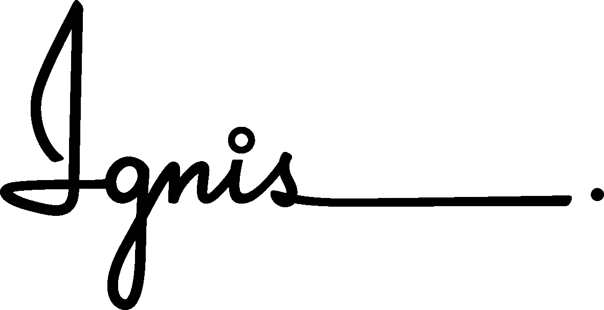
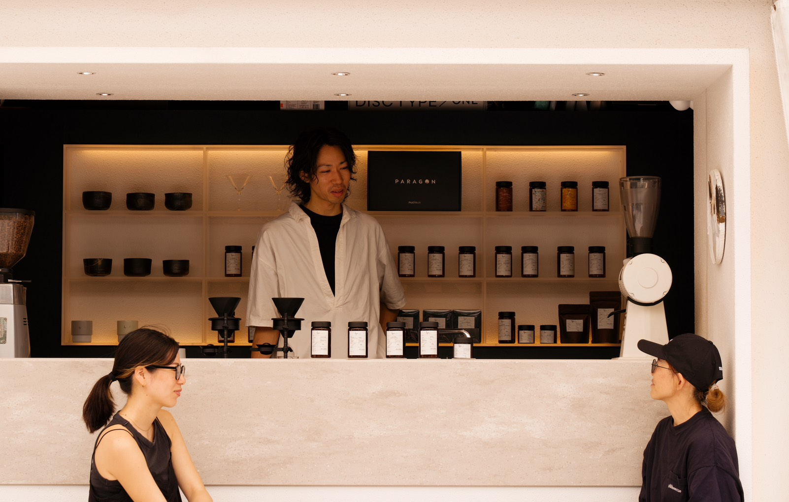
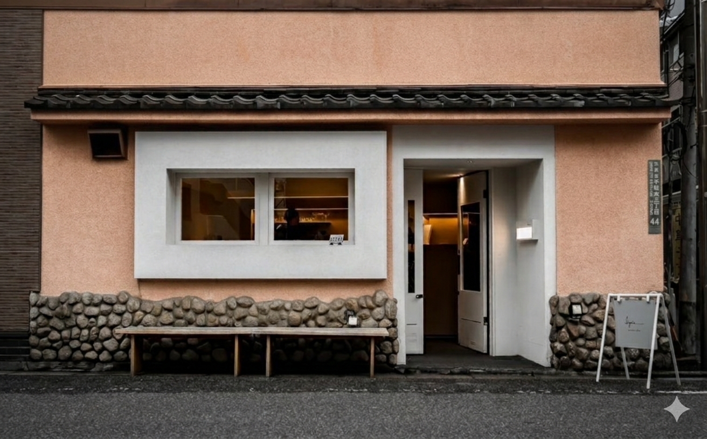
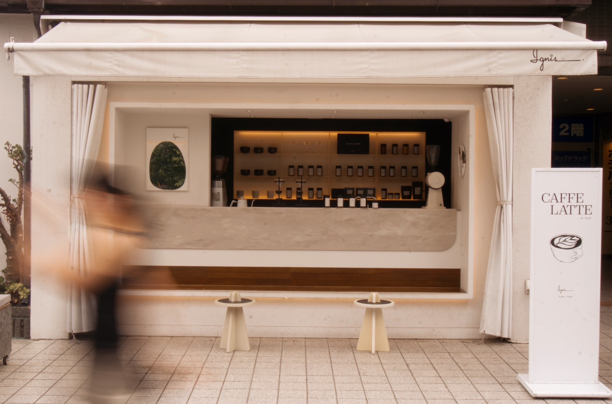
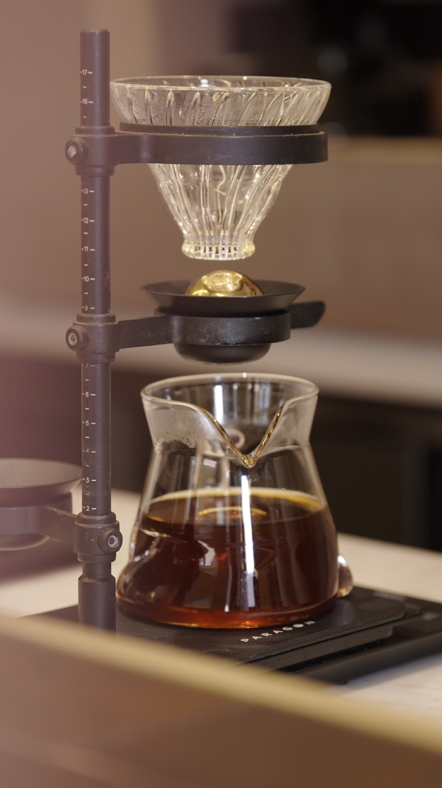

Coffee School Proposal 2027
Confidential -- Ignis Inc. 2026
01 -- Vision
「好き」を仕事に変える場所を、
Ignisがつくる。
コーヒーを好きな人は増え続けている。
「いつか仕事にしたい」と思っている人も、実はたくさんいる。
ただ、その一歩目の場所がまだ少ない。
Ignis Coffee Schoolは、求人広告ではなく「教育」から始まる出会いの場です。
Ignisの技術と理念を共有した人が、自然と仲間になっていく。
採用のやり方を変えるのではなく、採用の入口そのものをつくる。
02 -- Market
0
億円
国内コーヒー市場規模
うちスペシャルティ比率 32.1%*1
13.4%
→ 前回調査比 +3.1pt
スペシャルティコーヒーの
輸入量シェア（2024年）*1
0
%
国内コーヒー市場における
スペシャルティ比率（体感値）
2022年 22.0% → 2024年 32.1%*1
12.8%
CAGR（年平均成長率）
世界スペシャルティコーヒー
市場の成長率*2
*1 SCAJ（日本スペシャルティコーヒー協会）「スペシャルティコーヒー市場調査2024」（2025年3月発表）
*2 Business Research Insights, Global Specialty Coffee Market Report 2024
03 -- Strategy
Problem
求人媒体にはコーヒーショップの募集が並び、どれも似たような内容。その中でIgnisを見つけてもらい、選んでもらうのは簡単ではない。しかも1人のバリスタを育てるのに半年の教育期間と約45万円のコストがかかっている。
Shift
スクールは求人広告とは全く異なるチャネル。受講生はお金を払ってIgnisの技術と理念を学ぶ。この過程で生まれる信頼と共感は、求人サイト経由の応募者とは質が根本的に違う。
Structure
スクール専業は場所を借りてスキルだけ教える。Ignisには自社店舗という実践の場と、現役バリスタという講師がすでにいる。新たに大きな投資をせずに始められるのは、店舗を持つIgnisだからこそ。
Upside
受講料で売上が立ち、卒業生がIgnisのバリスタになれば採用コストはゼロ。独立支援した卒業生はIgnisの仕入れネットワークの顧客にもなりうる。一つの事業が複数のリターンを生む構造。
-¥45万
1人あたりの教育コスト削減
+¥15万
1名あたりの受講料収益
¥0
追加設備投資
04 -- Persona
田中 美咲（仮）
27歳 / 東京都足立区 北千住
Need 01
今の仕事を続けながら、収入を減らさずに開業の準備がしたい
Need 02
マンツーマンで、自分のレベルに合った指導を受けたい
Need 03
技術を学んだ先に、就職や独立の具体的な選択肢がほしい
Need 04
独立・開業に必要なリアルな知識も一緒に学びたい
Need 05
実際に店舗を運営しているプロから直接学びたい
佐藤 健太（仮）
42歳 / 神奈川県藤沢市
Need 01
平日夜に通えて、本業に支障が出ない
Need 02
趣味ではなく、将来の開業に直結する実践スキル
Need 03
開業に必要な知識（資金計画・許認可・仕入れ）も学びたい
Need 04
卒業後も相談できるネットワークがほしい
05 -- Course
10日間のマンツーマン集中プログラム。
エスプレッソ抽出の基礎からラテアート、ドリップ、
そして開業に必要な知識まで。
現役バリスタが一人ひとりのペースに合わせて指導します。

06 -- Curriculum
コーヒー豆の産地・品種・精製方法、焙煎度合いによる味の変化、
スペシャルティコーヒーの基準とカッピングの基礎を学びます。
ハンドドリップの基本技術、湯温・注ぎ方・蒸らし時間による味の変化を
繰り返し実践しながら体で覚えます。
マシンの構造と操作方法、グラインダーの調整、
タンピング・抽出の基本動作を繰り返し練習します。
フォームミルクの作り方、温度管理、
ハート・リーフなど基本のラテアートパターンを習得します。
ここまで学んだラテアートとドリップの技術を
集中的に反復練習し、精度とスピードを高めます。
カフェ開業に必要な許認可・資金計画・物件選び・
仕入れルートの構築など、独立に向けた実践知識を提供します。
10日間の総まとめ。実際のオペレーションを想定した
実技テストを行い、修了証を授与します。
07 -- Pricing
| スクール | 料金（税込） | 期間 | 形式 | 実地研修 |
|---|---|---|---|---|
| UCCコーヒーアカデミー | ¥30,800〜79,200 | 1日〜数回 | グループ | なし |
| バリスタコレクティブ | ¥150,000〜 | 約1.5ヶ月 | グループ / 短期集中はマンツーマン | なし（系列店研修の可能性あり） |
| Cafe's LIFE | ¥300,000〜 | 3〜12ヶ月 | 少人数（最大8名） | あり |
| リライブフードアカデミー | ¥500,000前後〜 | 5ヶ月〜 | 少人数グループ | あり（直営店） |
| Ignis Coffee School | ¥150,000〜280,000 | 全10回 / 約2.5ヶ月 | 完全マンツーマン | あり（自社店舗） |
※ 各校料金は2026年6月時点の公式サイト掲載情報。リライブフードアカデミーは料金非公開のため推定値。
Light
¥150,000
税込 ¥165,000
Standard
¥220,000
税込 ¥242,000
Pro
¥280,000
税込 ¥308,000
完全マンツーマン30時間 + 実店舗研修は、競合のグループ形式と比較して圧倒的な価値。
Standardプランを中心価格帯とし、客単価¥220,000を目指す構成。
08 -- Location
Ignisの自社店舗を活用し、実際の営業環境に近い空間でトレーニングを行います。
営業時間外の店舗を利用するため、追加の設備投資は最小限に抑えられます。

Ignis Sendagi
Primary Training Venue
営業時間外（午前 or 夜間）を活用
業務用エスプレッソマシン完備
最大2名の同時レッスンに対応

Ignis Kamakura
Secondary Venue
繁忙期のサブ会場として活用
実地研修プログラムの実施場所
営業中のリアルなオペレーション体験
09 -- Instructor
Phase 01
まず、まゆが土橋氏のもとで
高水準のバリスタ技術と
指導メソッドを徹底的に習得。
-- 初代講師: まゆ
Phase 02
研修を修了後、まゆが初代講師として
スクールプログラムを運営。
指導ノウハウを体系化。
-- 運用 & マニュアル整備
Phase 03
確立した指導メソッドをもとに
他の既存スタッフも講師として認定。
受け入れ人数の拡大が可能に。
-- 受け入れ体制の強化
スクール講師を務めることは、バリスタとしてのスキルの言語化・体系化につながり、
既存スタッフの技術力と仕事への誇りを向上させます。
「教える側に立てる」というキャリアパスは、スタッフの定着率向上にも寄与します。
09b -- Workload
Y1 年間工数の内訳
| 業務 | 算出根拠 | 年間時間 |
|---|---|---|
| レッスン実施 | 20名 x 10回 x 3時間 | 600h |
| 無料カウンセリング | 月6件 x 1時間 x 12ヶ月 | 72h |
| 教材作成・改善 | 月4時間 x 12ヶ月 | 48h |
| 集客（SNS・店舗施策） | 月3時間 x 12ヶ月 | 36h |
| 事務・管理 | 月2時間 x 12ヶ月 | 24h |
| 合計 | 780h / 年 |
週あたりの時間配分（Y1 平均）
| 業務 | 週あたり | 配分 |
|---|---|---|
| 店舗業務（既存） | 25h | |
| スクール（レッスン） | 12h | |
| スクール（運営・集客） | 3h |
週40時間のうちスクール関連は約15時間（37.5%）。平日夜のレッスン枠を活用するため、日中の店舗業務への影響は最小限。
繁忙期のバックアップ: 年末年始・GWなどの店舗繁忙期はレッスンを一時休止し、受講生には振替枠で対応。
09c -- Operations
| 月 | 火 | 水 | 木 | 金 | 土 | 日 | |
|---|---|---|---|---|---|---|---|
| 午前 10:00-13:00 |
-- | -- | -- | -- | -- | Open | Open |
| 午後 14:00-17:00 |
-- | -- | -- | -- | -- | Open | -- |
| 夜 19:00-22:00 |
Open | -- | Open | -- | Open | -- | -- |
* 週6枠 x 3時間 = 週18時間の提供可能枠。受講生4名が週1回ずつ選択するため、余裕を持った運営が可能。
* 平日夜枠が「仕事終わりに通える」ペルソナの主要利用時間帯。
Step 01
全10回のプログラムを完走した全員に発行。
Ignis Coffee Schoolの卒業を証明。
卒業生コミュニティへの参加資格。
Step 02
修了後の実技テストに合格した者のみに付与。
Ignisへのバリスタ採用・他企業あっせんの対象。
認定者はIgnisの品質基準を満たす証として機能。
2段階制にすることで、「修了 = 全員」「認定 = 実力者」を分離。
認定バリスタの価値を高めることで、スクール自体のブランド力を向上させる。
Standardプラン以上の受講生のみ認定試験の受験資格を付与し、アップセルにも寄与。
10 -- Graduate Path
Path 01
スクールで理念とスキルを共有した卒業生を、Ignis店舗のバリスタとして迎え入れる。教育済みの即戦力人材を採用コストゼロで確保。
Path 02
卒業後もIgnisとの繋がりを維持。仕入れルートの共有、イベントへの招待、卒業生同士のコミュニティなど、独立後も孤立しない関係を構築。
Path 03
物件選定、資金計画、仕入れルート構築、メニュー開発まで。Ignisのネットワークを活かした実践的な開業レクチャーを提供。
Path 04
Ignisの海外ネットワークを活用し、海外カフェでの研修や視察の機会を提供。国際的な視野を持つバリスタを育成。
Path 05
Ignisが築いた業界内のつながりを活かし、卒業生のスキルと希望に合った就職先を紹介。コーヒー業界全体への人材供給ハブに。
Path 06
卒業生が新たな受講生を紹介した場合、紹介報酬を付与。卒業生コミュニティが自走する集客チャネルとして機能。
卒業生紹介インセンティブ
¥15,000 / 1名紹介
受講料の10%を紹介報酬として卒業生に還元。
卒業生のリアルな体験談が最も強力な集客ツールとなり、
広告費を抑えながらオーガニックな集客を実現します。
11 -- Future
Input
受講料による収益
+ 人材の発掘
Growth
講師経験でスタッフの価値向上
卒業生のキャリア実現
Output
即戦力の採用 / 新店舗展開
紹介による新規受講生
リクルート情報が飽和する中、求人広告で人を集める時代は終わりつつあります。
Ignisは「教育」を入口にすることで、理念に共感した人材と出会い、
受講料で教育コストを回収しながら、即戦力を採用できる仕組みを構築します。
講師を務めるスタッフは技術と指導力の両面で成長し、バリスタとしての市場価値が向上。
卒業生からの紹介が次の受講生を呼び、広告に頼らない持続的な集客基盤が生まれます。
採用の競争に巻き込まれない、Ignis独自のエコシステムです。
12 -- Revenue
前提条件
| Year 1 | Year 2 | Year 3 | |
|---|---|---|---|
| 体制 | 講師1名 / 1店舗 | 講師2名 / 2店舗 | 講師3名 / 2店舗 |
| 同時受け入れ数 | 4名 | 8名 | 12名 |
| 年間受講者数 | 20名 | 40名 | 60名 |
| 受講料収入 | ¥3,000,000 | ¥6,000,000 | ¥9,000,000 |
| 紹介インセンティブ | -¥0 | -¥90,000 | -¥270,000 |
| 材料費・消耗品 | -¥400,000 | -¥800,000 | -¥1,200,000 |
| 講師人件費（追加分） | -¥0 | -¥1,200,000 | -¥2,400,000 |
| その他経費 | -¥240,000 | -¥400,000 | -¥500,000 |
| 営業利益 | ¥2,360,000 | ¥3,510,000 | ¥4,630,000 |
* Year 1はまゆが既存業務と兼務のため、講師人件費の追加負担なし。
* Year 2以降、講師は既存スタッフから認定。追加人件費は講師手当ベース（月10万円/名）で算出。
* 紹介インセンティブはYear 2から開始。紹介経由比率: Y2 15% / Y3 30%、¥15,000/名。
* 材料費は1名あたり約¥20,000（コーヒー豆・牛乳・消耗品）で算出。
* 自社店舗活用のため、家賃・設備費は既存コストに含む。
* 松竹梅プラン導入時は平均客単価¥220,000で再計算（収益は約1.5倍に増加）。
| Year 1（保守） | Year 1（標準） | |
|---|---|---|
| 年間受講者数 | 10名 | 20名 |
| 受講料収入 | ¥1,500,000 | ¥3,000,000 |
| 材料費・消耗品 | -¥200,000 | -¥400,000 |
| 講師人件費（追加分） | -¥0 | -¥0 |
| その他経費 | -¥180,000 | -¥240,000 |
| 営業利益 | ¥1,120,000 | ¥2,360,000 |
* 保守シナリオでも年間112万円の黒字。固定費が極めて低いため、損益分岐点は年間5名（月2名以下）。
10,000
Instagramリーチ / 月
--
300
プロフィール訪問
転換率 3%
6
無料カウンセリング予約
転換率 2%
2
成約
転換率 33%
* 月間1万リーチはIgnis東京店の現フォロワー規模から十分達成可能な水準。
* 店舗ポップ・紹介経由は上記ファネル外のため、実際の成約数はこれを上回る想定。
集客が想定を下回った場合の対応策:
Instagram広告（月5万円〜）による認知拡大、卒業生紹介インセンティブの前倒し導入、
1DAY体験レッスン（¥5,000）の実施による低ハードルの入口追加。
13 -- Website
Coffee School
10
日間の集中プログラム
働きながら通える
短期集中型カリキュラム
1:1
完全マンツーマン
あなたのペースに合わせた
オーダーメイドの指導
100%
キャリアサポート
就職・独立・海外研修
卒業後の道を一緒に描く

About the Program
Ignis Coffee Schoolは、現役バリスタによる完全マンツーマンの実践型プログラムです。エスプレッソ抽出、ラテアート、ドリップ、そして開業の知識まで。10日間であなたのコーヒー人生が始まります。受講中はIgnis社内教科書の閲覧も可能。
Curriculum -- 10 Days
Day 1-2
知識 & ドリップ
Day 3-4
エスプレッソ
Day 5-6
ラテアート基礎
Day 7-8
実技練習
Day 9-10
開業知識 & 修了
まずは無料カウンセリングから。
予約する14 -- Schedule
社内承認、カリキュラム詳細設計。まゆが土橋氏のもとで講師育成研修を開始。
まゆの講師研修修了。モニター受講生によるテスト開講、カリキュラムの検証・改善。
Webサイト公開、Instagram広告出稿、卒業生の声コンテンツ準備。
第1期生の受付開始。まゆが初代講師として本格運用スタート。
既存スタッフから2人目の講師を認定。2店舗で同時8名の受け入れ体制に拡大。紹介インセンティブ制度を本格始動。
卒業生のIgnis採用・独立支援の実績が蓄積。海外研修プログラム、他企業あっせんなど出口の多様化。
A step ahead in every cup.
Ignis Coffee School -- Coming 2027